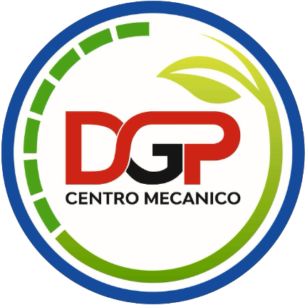

Guía oficial de identidad visual y comunicación para DGP Centro Mecánico — el socio estratégico para el mantenimiento de flotas agropecuarias.

Posicionamiento
DGP no es solo un taller mecánico. Es el socio estratégico e integral para el mantenimiento de flotas agropecuarias. La garantía de que las herramientas de trabajo de las empresas —las pick-ups— no se detienen, respaldados por disponibilidad inmediata de repuestos propios.
Promesa de Marca
Eficiencia técnica, transparencia absoluta en los diagnósticos y minimización del tiempo de inactividad de los vehículos. Las empresas compran tiempo; DGP lo protege.
Eficiencia Técnica
Diagnóstico preciso y resolución en el menor tiempo posible. Cada hora de inactividad de una flota es un costo directo para la empresa cliente.
Transparencia Total
Comunicación clara del diagnóstico, los tiempos y los costos. Los gerentes de flota necesitan datos confiables para tomar decisiones de negocio.
Stock Propio
La ventaja competitiva clave: casa de repuestos integrada. Cero esperas por piezas, precios directos y disponibilidad inmediata garantizada.
Sobre fondo blanco
Sobre fondo azul corporativo
Sobre fondo gris claro
Azul Corporativo
Dominante. Encabezados, fondos de presentación, elementos estructurales.
#124B8F
Verde Agro
Acento. Íconos, viñetas, botones de contacto y turno.
#7DB919
Rojo Motor
Restringido. Solo para alertas, stock inmediato y CTAs urgentes.
#D32027
Gris Asfalto
Texto general, encabezados secundarios, cuerpo técnico.
#2D2D2D
Blanco
Fondos limpios. El diseño debe respirar para transmitir orden y transparencia.
#FFFFFF
Azul — El Respaldo
Transmite los 20 años de trayectoria y la seriedad de un servicio premium. Es el color de la confianza institucional. Usar en encabezados de presentaciones a empresas, menú del sitio web, fondos de secciones de portada y elementos estructurales de alto impacto.
Verde — El Sector Agro
Conecta directamente con el campo y las empresas agrícolas. Refuerza el posicionamiento en el sector agropecuario. Usar en íconos de servicios, viñetas de listas, botones "Solicitar Turno" y "Contacto", y elementos decorativos de acento.
Rojo — La Inmediatez
Uso estratégicamente restringido. Reservar únicamente para: alertas de "Stock Inmediato", avisos de tiempo de respuesta urgente, promociones de repuestos y llamados a la acción de alta prioridad. El exceso neutraliza su impacto.
Gris + Blanco — La Transparencia
El espacio blanco no es vacío; es un valor de marca. Fondos limpios y texto en gris transmiten la calidad de un taller premium y ordenado. Evitar saturar composiciones; dejar que los colores corporativos respiren en espacios amplios.
Tipografía Principal
Montserrat
Títulos · Subtítulos · UI Principal
FLOTA
ACTIVA
Tipografía Secundaria
Roboto
Cuerpo · Datos Técnicos · Documentos
Reemplazamos los inyectores para evitar un fallo catastrófico en plena cosecha. Diagnóstico OBD completo, revisión del sistema de combustible y prueba de presión de riel.
Técnico pero Claro
Precisión de ingeniería traducida al impacto comercial. No explicar solo la falla; explicar las consecuencias de no resolverla a tiempo durante la temporada de cosecha.
Enfocado en Soluciones
Las empresas compran tiempo. Enfatizar siempre el stock inmediato, la velocidad del diagnóstico y la especialización en pick-ups de trabajo agropecuario.
Autoridad Seria
20 años de trayectoria respaldan cada comunicación. Tono de asesor corporativo. Sin jerga juvenil ni humor forzado. Perfil de consultor técnico de confianza.
Correcto — Comunicación B2B
"Reemplazamos los inyectores para evitar un fallo catastrófico en plena cosecha. Con nuestro stock propio, la unidad estuvo operativa en menos de 48 horas."
Explica la consecuencia comercial del problema, destaca la ventaja del stock propio y cuantifica el tiempo de resolución. Lenguaje técnico y corporativo.
Incorrecto — Evitar
"Le cambiamos unas piezas que andaban mal. ¡Quedó como nuevo! 🔥 Cualquier consulta mandanos un mensajito al whatsapp."
Lenguaje informal que erosiona la credibilidad ante gerentes de flota. No transmite expertise técnico ni la magnitud del servicio. Emojis fuera de contexto corporativo.
Correcto — Propuesta de valor
"Servicio de mantenimiento preventivo para flotas agropecuarias: diagnóstico técnico completo, repuestos originales en stock y cronograma de intervención para no interferir con la operación."
Presenta la solución completa. Menciona los tres pilares (diagnóstico, stock, tiempos). Posiciona a DGP como socio operativo, no como un servicio puntual.
Incorrecto — Evitar
"¡Hola a todos! Hoy les contamos que hacemos service de autos. ¡No olviden seguirnos para más contenido!"
Sin propuesta de valor. Sin diferenciación. Sin foco en el cliente B2B. Este tipo de mensaje activa el modo "scroll" en un gerente de flota. No informa, no convierte.
// Verbos de posicionamiento
// Términos técnicos preferidos
// Frases de marca B2B
Imágenes que usar
Imágenes a evitar
// Guía de composición para piezas digitales
Jerarquía
Título grande (Montserrat ExtraBold) → subtítulo o dato técnico → cuerpo descriptivo → CTA en verde. El ojo debe fluir de arriba a abajo sin esfuerzo.
Espacio
Márgenes mínimos de 32px en todos los lados. El espacio en blanco comunica orden y calidad. Nunca saturar una pieza con texto e imágenes a la vez.
Contraste
Texto blanco sobre fondos azules. Texto gris oscuro sobre fondos blancos. Nunca texto amarillo o verde sobre blanco (contraste insuficiente).
20+
Años de trayectoria
Experiencia acumulada en mantenimiento especializado de pick-ups agropecuarias y utilitarios.
360°
Servicio integral
Taller mecánico y casa de repuestos bajo el mismo techo. Diagnóstico, reparación y repuesto en una sola visita.
0h
Espera por repuestos
Stock inmediato propio. Ventaja competitiva clave frente a talleres que dependen de proveedores externos.
Diagnóstico OBD
Lectura completa de códigos de falla con escáner de fábrica. Informe técnico detallado para la empresa cliente.
Mantenimiento Preventivo
Cronograma de service adaptado a la operación de cada flota. Coordinación para minimizar tiempos de inactividad.
Inyectores
Reemplazo y reprogramación de inyectores. Prevención de fallos catastróficos en períodos de alta demanda operativa.
Sistema de A/C
Servicio completo de aire acondicionado vehicular: diagnóstico, carga, reparación de fugas y reemplazo de componentes.
Service por Marca
Especialización en Toyota Hilux, Nissan Frontier, VW Amarok, Ford Ranger y BMW. Procedimientos específicos por modelo.
Frenos y Seguridad
Cambio de pastillas, discos y líquido de frenos. Control integral del sistema de frenado y ABS.
Iluminación
Reemplazo y upgrade de sistema de iluminación: faros LED, antiniebla y luces de trabajo para operaciones nocturnas.
Velocidad Crucero
Activación e instalación del control de velocidad crucero en vehículos compatibles. Mejora la eficiencia en rutas largas.
Tarjeta Virtual
Historial digital del vehículo. Acceso inmediato al estado técnico de cada unidad de la flota desde cualquier dispositivo.
Reprogramación ECU
Calibración y reprogramación de la unidad de control del motor. Optimización de performance y cumplimiento de parámetros de fábrica.
Kit Altura & Ensanche
Instalación de kit de elevación y ensanchamiento para condiciones de campo. Mejora del desempeño off-road en terrenos agropecuarios.
Casa de Repuestos
Diferencial clave: Stock propio de repuestos originales y alternativos de alta calidad. Precios directos y disponibilidad garantizada sin esperas.
Contenido Prioritario — Reels
Mayor alcance orgánico · Formato vertical 9:16
Contenido de Autoridad — Posts
Posicionamiento como expertos · Formato cuadrado 1:1